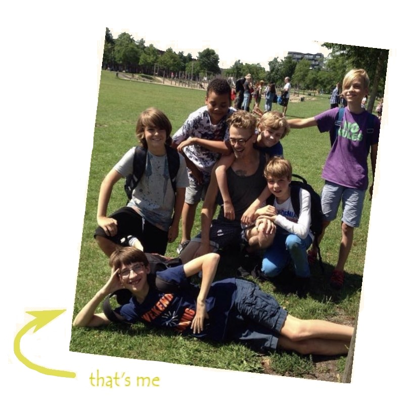
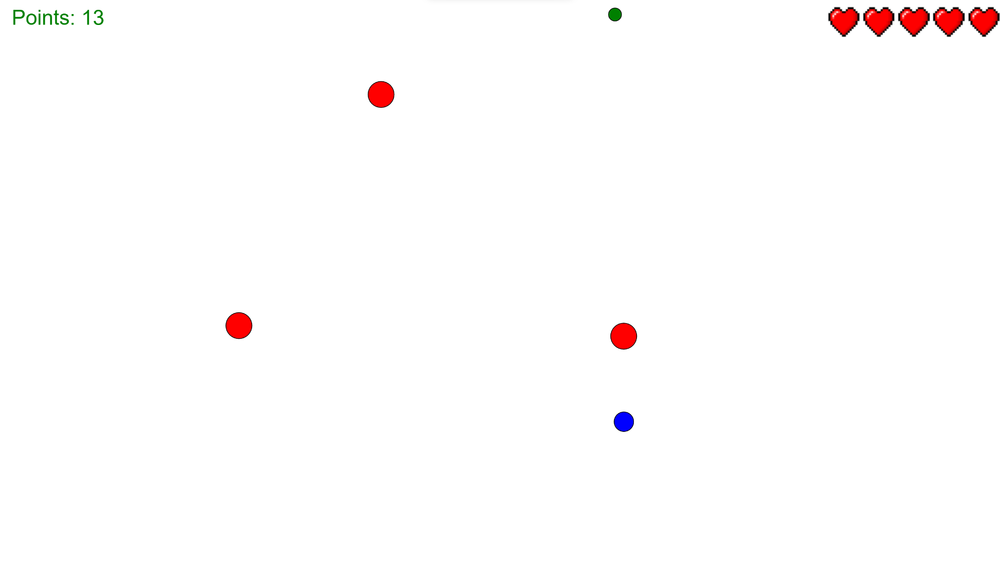

Welcome!
Greetings! My name is Jared Willemsen and I am currently a student at the Metis Montossori Lyceum in Amsterdam. This website was created to show off my experience with coding up to now.
last update: 29/03/2022
About me
|  |
Almost my whole life I've been intrested in computer programming. It started with my curiosity on how games were created. When I was about ten years old I had already begun with writing code at school with my old friends and teacher at school. I Later became a student the Metis Montosori Lyceum where I joined the CoderClass. It's here where I made a lot of fun projects and met a lot of friends who also love programming like I do. I"m almost done here but I know I'll always remember as a time where I learned and grew a lot and I hope that continues. |
After I've finished this school I plan on studying mathmatical engineering since I have an affinity for math and this course also teaches programming with a focus on data which has been interesting me for quite a while.
My work
Over the years I've completed some cool projects that I would like to show off here.
Ball Game
The first thing I find worth mentioning is this simpel game which I made in javasrcipt. In the game you move around as the blue ball and the goal is to collect as many green balls whilst avoiding the red balls that bounce around the screen, get hit five times and you lose.
This was the first time I worked with classes so I learnt quite a lot with it and it was also fun to make
Hidden trails
Hidden trails is a game I made in python that runs on the console. It works like a text-adventure RPG. You move through the level fighting enemies and acquiring stronger gear and at the end fight a boss.
The emphasise here was on the use of object oriented programming, which went pretty well, but I also learned how to use JSON files and how to structure my code better.
C++ course
Last year I was able to participate in a university course given by the Vrije Universiteit van Amsterdam and we even got a certificate. The course itself consisted of a few exercises you had to complete every week that got progresily harder and it was really fun to puzzel with them for a while.
You can also find my work on my github page.
Contact
You can contact me at jared@tommasi.nl or alternatively you can follow me on LinkedIn